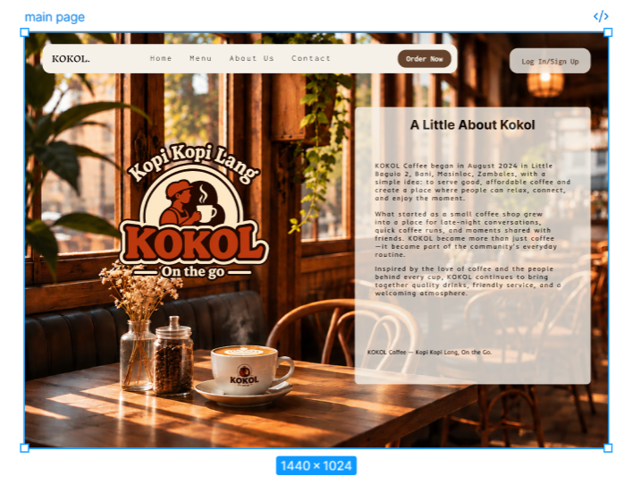

Building digital experiences
with purpose.
Hi, I'm Archie. I enjoy turning ideas into functional systems and clean, user-friendly interfaces.
Curious about how
things work—and how they look.
I'm an Information Technology student interested in software quality, UI/UX design, and building practical web applications. I like exploring how thoughtful design and reliable functionality can make everyday tasks easier.
From planning interfaces in Figma to developing and testing web systems, I'm continuously learning and improving my craft.
KOKOL Coffee
Web system & UI concept
A coffee shop system concept combining an online storefront with staff-side tools for sales, inventory, orders, and customer management.





Focus
UI design · Web development · System testing
Tools & technologies
Figma · PHP · MySQL · HTML · CSS · JavaScript
Modules
POS · Online orders · Inventory · Sales · Customer management · Messages
What I'm learning
and working with.
Let's create
something useful.
I'm currently looking for internship opportunities where I can learn, contribute, and grow as an IT professional.
archie.lumosad@iist.edu.ph ↗Cavite, Philippines